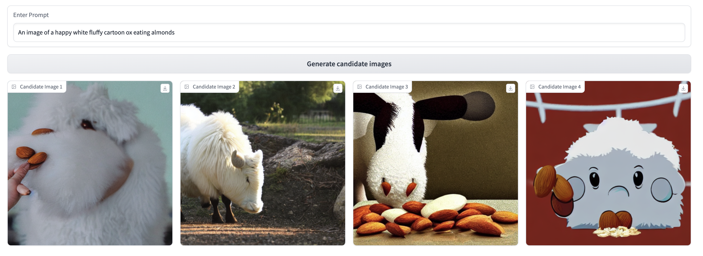
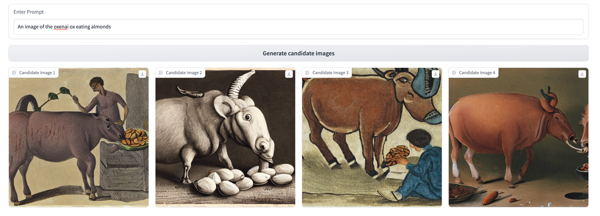
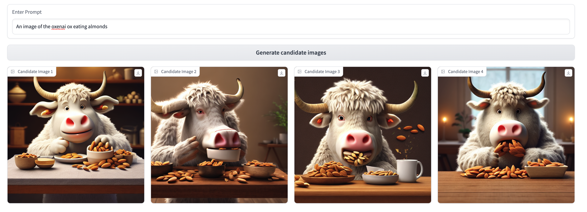
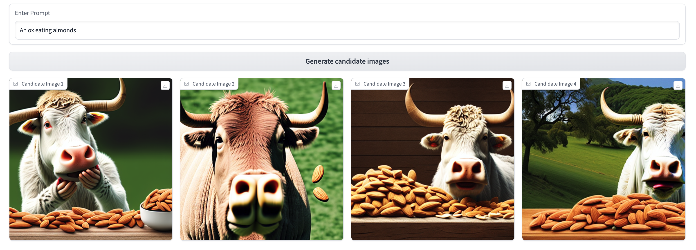
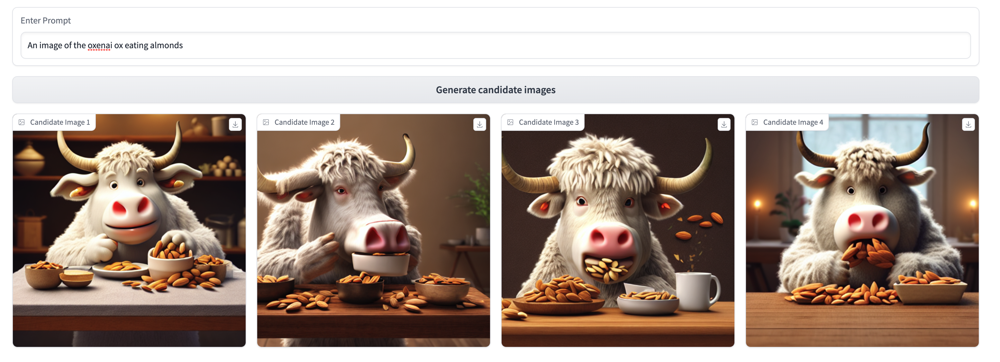
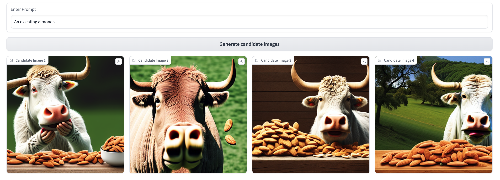
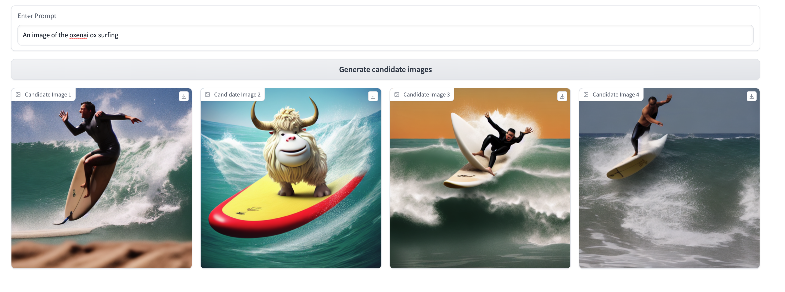

Stable Diffusion is an incredible open-source tool for fast, effective generation of novel images across a wide variety of domains. Despite its power and convenience, it can struggle to create consistent, identifiable characters in specific styles.
At Oxen, we’re firm believers in the power of enhancing foundational models with domain-specific data. In this tutorial, we’ll use an Oxen repository and the Dreambooth fine-tuning technique to create a Stable Diffusion variant that can consistently reproduce cute, fluffy cartoon oxen like the one currently hanging out on our 404 page.
While improvements in prompting can mitigate Stable Diffusion’s limitations to some extent, it is almost always a better bet to fine-tune the model with your own data. Here are a few reasons why:
Dreambooth excels at teaching models new tokens which weren’t present in the original training data. This makes it perfect for generating novel, named characters—we’ll use this to teach a base Stable Diffusion model to recognize and produce images of “the oxenai ox”, our company mascot-to-be.
Here’s a quick preview of the results we’ll be able to achieve with only a few minutes of training on only six images.

These are some pretty exciting results, both in the increased coherence and consistency of the generated images, and the ease with which we could teach the model to recognize “the oxenai ox” as a specific token. Let’s get started!
This tutorial uses resources from Hugging Face’s Dreambooth guide, adapted for easier use with your own custom datasets via Oxen. The following contains all you’ll need to create your own Stable Diffusion character from scratch, but Hugging Face’s tutorial contains supplemental configuration details for anyone working with comparatively little GPU RAM. If you’re having trouble getting the model to train on your machine, check out their walkthrough for tips!
We’ll use the diffusers package to fine-tune our model with Dreambooth. Clone its GitHub repo locally and install it, along with its dependencies.
git clone https://github.com/huggingface/diffusers
pip install -U -r diffusers/examples/dreambooth/requirements.txt
cd diffusers
pip install -e .Set up a default Accelerate config for handle the boilerplate for running inference on GPUs:
# From a shell...
accelerate config default# ...or from a notebook
from accelerate.utils import write_basic_config
write_basic_config()Dreambooth’s strength lies in its ability to help a base model learn about a specific, named subject from only a few observations.
Instead of hundreds / thousands of prompt-labeled examples (i.e., “A cute cartoon ox riding a surfboard”) we can just specify a unique named identifier for all the training examples (we used ”an image of the oxenai ox” to teach the model about our mascot-to-be) and pass in just the imagery.
As such, this example will use the ox images stored in this Oxen repo. With some help from ChatGPT in generating a wide variety of ox-related prompts, we’ve collected a few hundred generated ox images in our target style from a variety of models (read how to set up your own image generation RLHF system here). Since Dreambooth works best with small but consistent datasets, we’ve selected the six oxen most consistent with our target style.

You can use any data you’d like here, but we’d recommend prioritizing quality and consistency over quantity to allow the model to learn as coherent a representation of your character as possible.
Once you’ve built an Oxen repo with your own data (here’s ours for reference), pull it down into your local environment:
oxen clone https://www.oxen.ai/your-namespace/your-url-here…well, that’s all it takes. We’re ready to train!
Let’s first set up a way to view the results of both the base and fine-tuned models on similar prompts. gradio is a great tool to set up quick UIs for this exact purpose.
The code for building this interface is available here and more extensively documented in our tutorial on collecting human feedback data for generative AI.
pip install gradio
import torch
from diffusers import StableDiffusionPipeline
from PIL import Image
import gradio as gr
# Run inference with the base stable diffusion model
pipe = StableDiffusionPipeline.from_pretrained("CompVis/stable-diffusion-v1-4")
pipe.to("cuda") # If using CUDA for GPU
def generate_images(prompt):
images = pipe(prompt, guidance_scale=7.5, num_images_per_prompt=4).images
return images
with gr.Blocks() as demo:
prompt = gr.components.Textbox(label="Enter Prompt")
generate = gr.Button("Generate candidate images")
images = {}
with gr.Row()
for i in range(1,5):
with gr.Column():
images[i] = gr.components.Image(label=f"Candidate Image {i}", type='pil')
generate.click(generate_images, inputs=prompt, outputs=list(images.values()))
demo.launch(share=True)This yields us the following UI, which we can use to generate some sample results for the base model (we used CompVis/stable-diffusion-v1-4, but feel free to experiment with others) across 3 prompting strategies. We’ll revisit these three prompts after our fine-tuning step to see what the model has learned!
  
The model training script we’ll use is in the diffusers git repository we cloned earlier, at path diffusers/examples/dreambooth/train_dreambooth.py.
We’ll first set a few variables to correctly parameterize the script for our custom use case:
MODEL_NAME: base model to start with from Hugging FaceINSTANCE_DIR: directory containing our imagery for fine-tuning - will point to the images folder in our oxen repoOUTPUT_DIR: name of the model output folder (and the model name if uploading to Huggingface)INSTANCE_PROMPT: the unique “name” of the subject we want the model to learnexport MODEL_NAME = "CompVis/stable-diffusion-v1-4"
export INSTANCE_DIR = "./dreambooth-ox/images"
export OUTPUT_DIR = "stable-diffusion-oxified"
export INSTANCE_PROMPT = "an image of the oxenai ox"We’re now set to run the script. All below flags use Hugging Face’s recommended settings. You’ll be directed by the CLI to authenticate with Hugging Face.
accelerate launch diffusers/examples/dreambooth/train_dreambooth.py \
--pretrained_model_name_or_path=$MODEL_NAME \
--instance_data_dir=$INSTANCE_DIR \
--output_dir=$OUTPUT_DIR \
--instance_prompt="$INSTANCE_PROMPT" \
--resolution=512 \
--train_batch_size=1 \
--gradient_accumulation_steps=1 \
--learning_rate=5e-6 \
--lr_scheduler="constant" \
--lr_warmup_steps=0 \
--max_train_steps=400 \
--push_to_hubThis took around 5 minutes to run on a single NVIDIA A10 with 24GB of GPU VRAM, which we rented from Lambda Labs.
If the --push_to_hub flag was set, the script will have pushed the resulting model up to Hugging Face after training. As such, we can modify our inference UI code as following to run inference on the new model:
# Run inference with the base stable diffusion model
#OLD: pipe = StableDiffusionPipeline.from_pretrained("CompVis/stable-diffusion-v1-4")
#NEW:
pipe = StableDiffusionPipeline.from_pretrained("<your-hf-username>/stable-diffusion-oxified")Let’s compare the models using the same 3 prompts we applied pre-Dreambooth.
  
 
Lots of cool differences across these three prompting strategies to unpack here! Some key takeaways:
an image of the oxenai ox. In the third prompt, where we reference just an ox, the model’s underlying understanding of what an ox looks like from its original training data still shines through (though conditioned slightly by our examples—see the white fur and prominent horns).oxenai ox token, this fine-tuning has made the model more capable of producing cartoonish, fuzzy oxen—just look at the gap in coherence between the pre- and post-Dreambooth results for the first prompt!Though these early results are promising, the model still struggles a bit in domains dramatically different from the fine-tuning images. 
Additionally, it’s nailed the general characteristics of our desired ox (cute, cartoonish, fuzzy) and is showing much-improved consistency, but isn’t yet able to produce a singular, recognizable character.
As an attempt to solve both these issues, we’re going to use this new model (and an Oxen-powered RLHF interface) to gain further, prompt-specific feedback for additional fine-tuning. We think that this will be key in bridging the gap to a generalizable, consistent character—stay tuned for the results!
At OxenAI we want to see what you are building! Reach out at hello@oxen.ai, follow us on Twitter [@oxendrove](https://twitter.com/oxendrove), dive deeper into the documentation, or Sign up for Oxen today. http://oxen.ai/register.
And remember—for every star on GitHub, an ox gets its wings.
No, really…we hooked up an Oxen repo to a GitHub web-hook that runs Stable Diffusion every time we get a star. Go find yours!